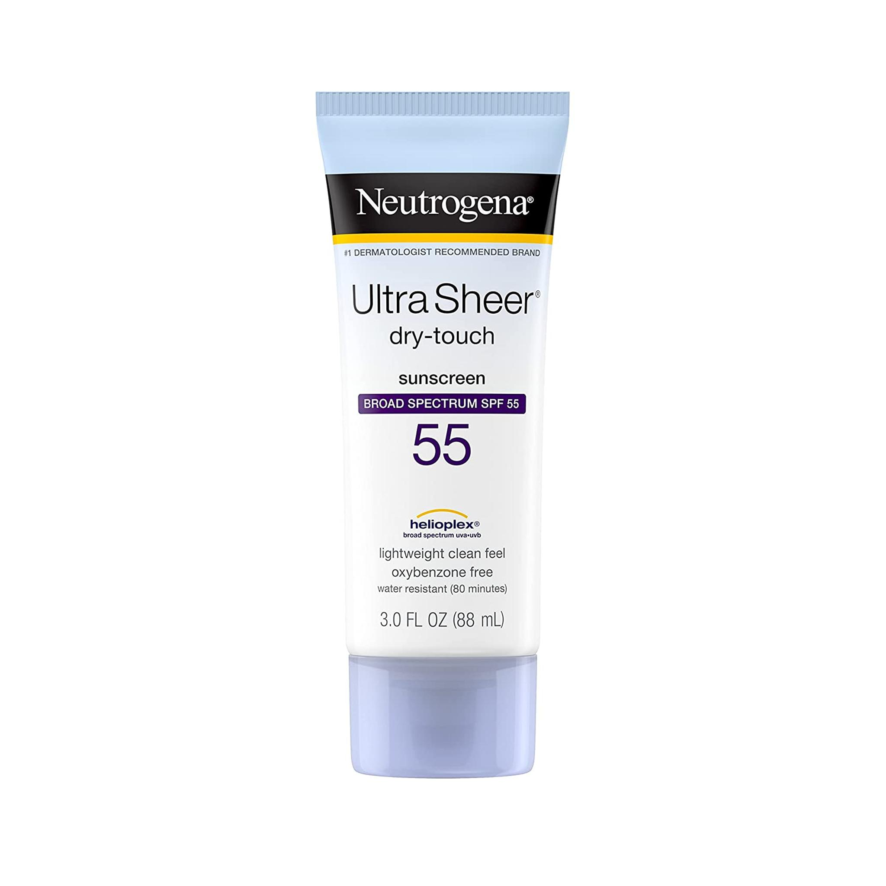
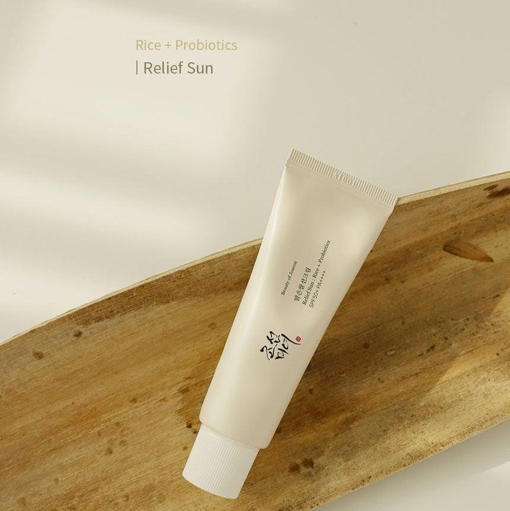

Finding the best sunscreen for oily skin can be difficult because many SPF products feel heavy and greasy. The right sunscreen should protect your skin from UV damage while keeping your face fresh and lightweight throughout the day.
Why Oily Skin Needs Sunscreen
People with oily skin often skip sunscreen because they worry about shine and clogged pores. However, daily sunscreen is essential to prevent sun damage, acne marks, and premature aging.
Choose oil-free and non-comedogenic sunscreen formulas for better results on oily skin.
Top Sunscreens for Oily Skin
1. La Roche-Posay Anthelios

A lightweight sunscreen with strong SPF protection and a matte finish, making it ideal for oily and acne-prone skin.
2. Neutrogena Ultra Sheer Dry-Touch Sunscreen

This sunscreen absorbs quickly and helps reduce greasy shine during hot weather.
3. Beauty of Joseon Relief Sun

A popular Korean sunscreen known for its lightweight texture and glowing finish.
How to Choose the Right Sunscreen
Look for products labeled:
- Oil-Free
- Non-Comedogenic
- SPF 30 or Higher
- Lightweight Gel Formula
Final Thoughts
The best sunscreen for oily skin should provide strong sun protection without making your skin feel heavy or sticky. Testing lightweight formulas can help you find the perfect product for your daily skin care routine.
Back to Home